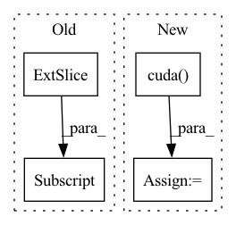

Pattern ID :26630

Before Change
coarse_samples, coarse_lengths = validSampler(
valid_pixels, valid_coords, train_cam_tf, sample_ray_num, coarse_sample_pnum, 200, 200, train_focal, near_t, far_t
)
coarse_cams = coarse_samples[:, -1, :-3].contiguous()
gt_rgb = coarse_samples[:, -1, -3:].contiguous()
coarse_samples = coarse_samples[:, :-1, :].contiguous()
coarse_rgbo = coarse_net.forward(coarse_samples)
After Change
for i in range(4):
test_result = render_image(fine_net, test_cam_tf[i * 10], 200, test_focal, near_t, far_t, fine_sample_pnum)
test_results.append(test_result)
test_loss += loss_func(test_result, testset[i * 10].cuda())
render_timer.toc()
eval_timer.toc()
writer.add_scalar("Test Loss", loss, test_cnt)
In pattern: SUPERPATTERN
Frequency: 3
Non-data size: 4
Instances
Fragment ID: 79679967
Project Name: enigmatisms/nerf
Commit Name: 5bf2199afe3d4eff27be923b0e6d62a3118af597
Time: 2022-04-13
Author: 984041003@qq.com
File Name: train.py
M Class Name: AnonimousClass
N Class Name: AnonimousClass
M Method Name: main(0)
N Method Name: main(0)
M Parent Class:
N Parent Class:
M File Name: train.py
N File Name: train.py
M Start Line: 66
M End Line: 188
N Start Line: 73
N End Line: 196
'>
Before Change
indexy[i] : indexy[i] + leny,
]
if FLAGS.flip_horizontal is True and np.random.randint(0, 2) == 1:
ten = ten[:, :, :, ::-1]
new_tensor_list.append(ten)
tensor = np.concatenate(new_tensor_list, 0)
return torch.from_numpy(tensor.astype(np.float32))
After Change
tensor = F.pad(tensor, [pad, pad, pad, pad])
index = np.random.randint(0, pad * 2, size=[2, bs])
indexx, indexy = index[0], index[1]
inv_idx = torch.arange(leny - 1, -1, -1).long().cuda()
new_tensor_list = []
for i in range(bs):
ten = tensor[
'>
Fragment ID: 79679960
Project Name: taufikxu/triple-gan
Commit Name: 5f4d74f329e6b493abfbc1b1d9fe79acb0eda810
Time: 2020-06-19
Author: kunxu.thu@gmail.com
File Name: library/data_iters.py
M Class Name: AugmentWrapper
N Class Name: AugmentWrapper
M Method Name: __call__(2)
N Method Name: __call__(2)
M Parent Class: object
N Parent Class: object
M File Name: library/data_iters.py
N File Name: library/data_iters.py
M Start Line: 78
M End Line: 110
N Start Line: 83
N End Line: 106
'>
Before Change
if results[0] is None:
return
top_label = np.array(results[0][:, 6], dtype = "int32")
top_conf = results[0][:, 4] * results[0][:, 5]
top_boxes = results[0][:, :4]
After Change
images_shape = torch.unsqueeze(torch.from_numpy(image_shape), 0)
if self.cuda:
images = images.cuda()
images_shape = images_shape.cuda()
//---------------------------------------------------------//
// 将图像输入网络当中进行预测！
//---------------------------------------------------------//
outputs = self.net(images)
'>
Fragment ID: 79679971
Project Name: bubbliiiing/detr-pytorch
Commit Name: 4e4f177fa730d8251a7c029d887c3885392cd4c2
Time: 2022-11-26
Author: 3323290568@qq.com
File Name: utils/callbacks.py
M Class Name: EvalCallback
N Class Name: EvalCallback
M Method Name: get_map_txt(5)
N Method Name: get_map_txt(5)
M Parent Class:
N Parent Class:
M File Name: utils/callbacks.py
N File Name: utils/callbacks.py
M Start Line: 112
M End Line: 148
N Start Line: 112
N End Line: 146